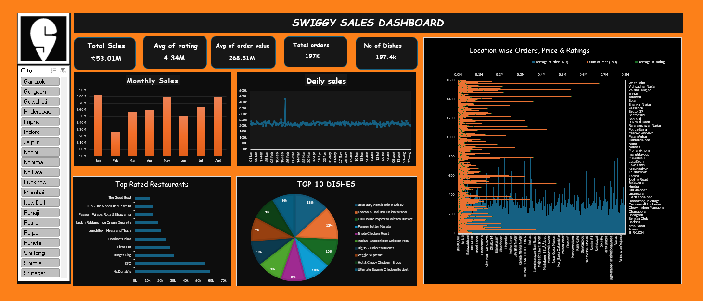
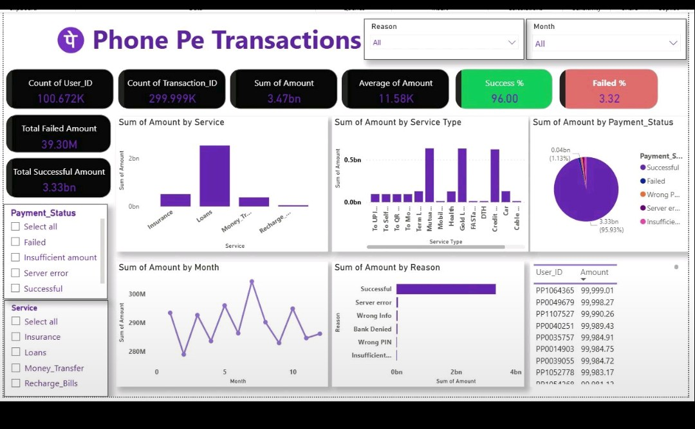
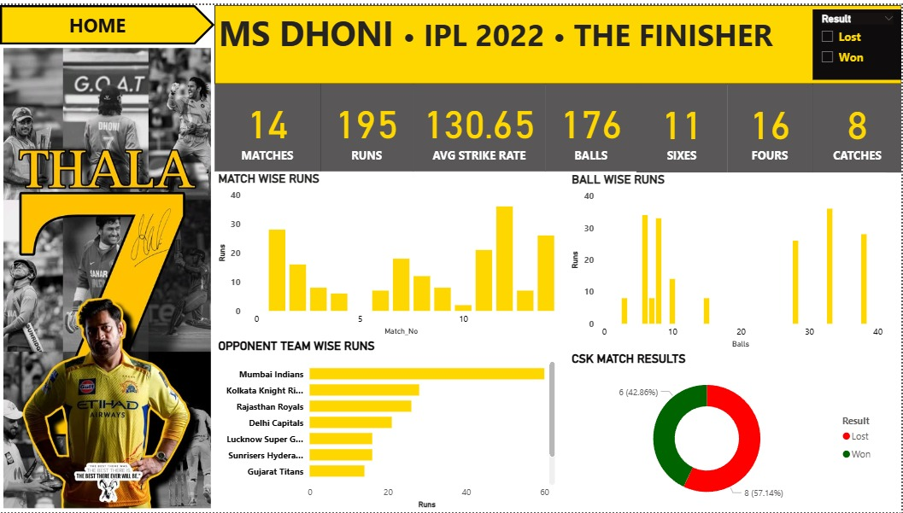
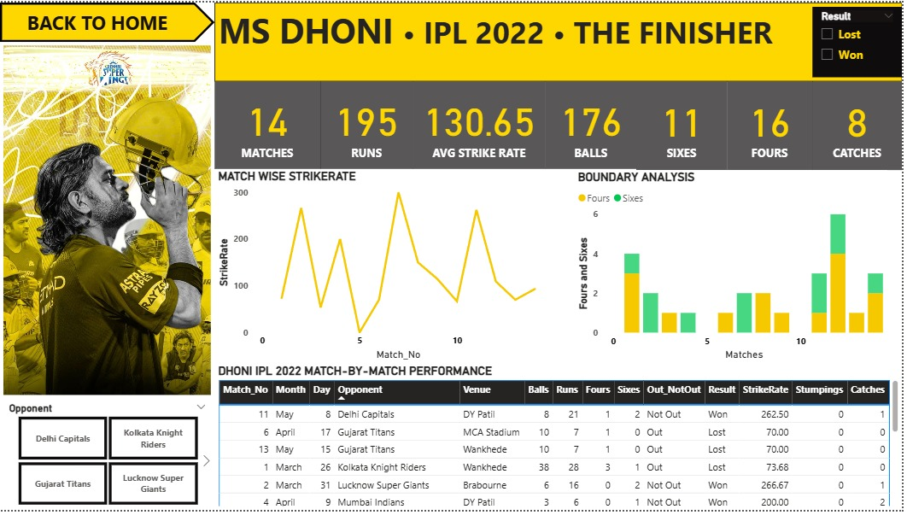

POWER BI · SQL · EXCEL
Swiggy Sales & Restaurant Performance
Interactive analysis of sales, orders, ratings, order value, dishes, restaurants and location-wise performance.
₹53.01M Sales197K Orders4.34 Rating
View GitHub Project ↗DATA ANALYST · SQL · PYTHON · EXCEL . POWER BI. GENAI
Hi, I'm Soma Sekhara Reddy, a Data Analyst and GenAI professional who enjoys transforming raw and unstructured data into clear dashboards, KPIs and actionable insights.
role = "Data Analyst"
tools = ["SQL",
"Python", "EXCEL", "GenAI"]
output = "Insights that matter ✓"ABOUT ME
I work across Data Analytics, Business Intelligence and Generative AI. My professional experience includes insurance and pension domain projects involving document classification, information extraction, audio transcription, checklist evaluation and automated scoring.
Alongside professional work, I build Power BI projects that turn real-world datasets into interactive reports. I focus on clean KPIs, meaningful visualizations and analysis that is easy for stakeholders to understand.
Download my resume →TECHNICAL SKILLS
FEATURED PROJECTS
A few Power BI projects that demonstrate dashboard design, KPI development, trend analysis and business storytelling.

Interactive analysis of sales, orders, ratings, order value, dishes, restaurants and location-wise performance.

Transaction performance analysis across services, payment status, transaction reasons, monthly trends and service types.


Match-by-match analysis covering runs, strike rate, boundaries, catches, opponents and CSK match results.
PROFESSIONAL EXPERIENCE
Built AI-driven workflows using Python, LLMs, prompt engineering and APIs for audio transcription, checklist evaluation, scoring, document classification and information extraction.
Created interactive dashboards for 300K+ transaction records and business performance analysis, with KPI-driven reporting and interactive filters.
LET'S CONNECT
I'm open to Data Analyst, Power BI and analytics opportunities.